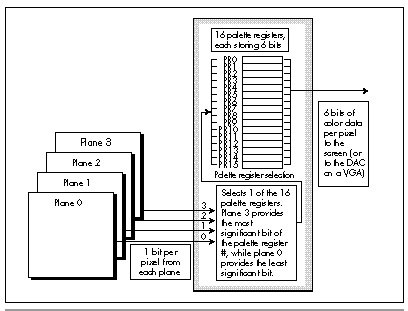
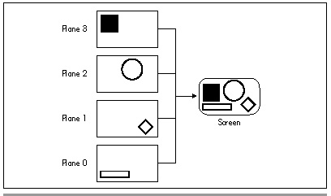
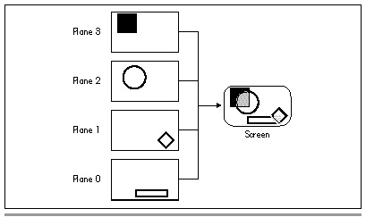

| Previous | Table of Contents | Next |
When it comes to computers, my first love is animation. There’s nothing quite like the satisfaction of fooling the eye and creating a miniature reality simply by rearranging a few bytes of display memory. What makes animation particularly interesting is that it has to happen fast (as measured in human time), and without blinking and flickering, or else you risk destroying the illusion of motion and solidity. Those constraints make animation the toughest graphics challenge—and also the most rewarding.
It pains me to hear industry pundits rag on the PC when it comes to animation. Okay, I’ll grant you that the PC isn’t a Silicon Graphics workstation and never will be, but then neither is anything else on the market. The VGA offers good resolution and color, and while the hardware wasn’t designed for animation, that doesn’t mean we can’t put it to work in that capacity. One lesson that any good PC graphics or assembly programmer learns quickly is that it’s what the PC’s hardware can do—not what it was intended to do—that’s important. (By the way, if I were to pick one aspect of the PC to dump on, it would be sound, not animation. The PC’s sound circuity really is lousy, and it’s hard to understand why that should be, given that a cheap sound chip—which even the almost-forgotten PCjrhad—would have changed everything. I guess IBM figured “serious” computer users would be put off by a computer that could make fun noises.)
Anyway, my point is that the PC’s animation capabilities are pretty good. There’s a trick, though: You can only push the VGA to its animation limits by stretching your mind a bit and using some unorthodox approaches to animation. In fact, stretching your mind is the key to producing good code for any task on the PC—that’s the topic of the first part of this book. For most software, however, it’s not fatal if your code isn’t excellent—there’s slow but functional software all over the place. When it comes to VGA animation, though, you won’t get to first base without a clever approach.
So, what clever approaches do I have in mind? All sorts. The resources of the VGA (or even its now-ancient predecessor, the EGA) are many and varied, and can be applied and combined in hundreds of ways to produce effective animation. For example, refer back to Chapter 23 for an example of page flipping. Or look at the July 1986 issue of PC Tech Journal, which describes the basic block-move animation technique, or the August 1987 issue of PC Tech Journal, which shows a software-sprite scheme built around the EGA’s vertical interrupt and the AND-OR image drawing technique. Or look over the rest of this book, which contains dozens of tips and tricks that can be applied to animation, including Mode X-based techniques starting in Chapter 47 that are the basis for many commercial games.
This chapter adds yet another sort of animation to the list. We’re going to take advantage of the bit-plane architecture and color palette of the VGA to develop an animation architecture that can handle several overlapping images with terrific speed and with virtually perfect visual quality. This technique produces no overlap effects or flicker and allows us to use the fastest possible method to draw images—the REP MOVS instruction. It has its limitations, but unlike Mode X and some other animation techniques, the techniques I’ll show you in this chapter will also work on the EGA, which may be important in some applications.
As with any technique on the PC, there are tradeoffs involved with bit-plane animation. While bit-plane animation is extremely attractive as far as performance and visual quality are concerned, it is somewhat limited. Bit-plane animation supports only four colors plus the background color at any one time, each image must consist of only one of the four colors, and it’s preferable that images of the same color not intersect.
It doesn’t much matter if bit-plane animation isn’t perfect for all applications, though. The real point of showing you bit-plane animation is to bring home the reality that the VGA is a complex adapter with many resources, and that you can do remarkable things if you understand those resources and come up with creative ways to put them to work at specific tasks.
The underlying principle of bit-plane animation is extremely simple. The VGA has four separate bit planes in modes 0DH, 0EH, 10H, and 12H. Plane 0 normally contains data for the blue component of pixel color, plane 1 normally contains green pixel data, plane 2 red pixel data, and plane 3 intensity pixel data—but we’re going to mix that up a bit in a moment, so we’ll simply refer to them as planes 0, 1, 2, and 3 from now on.
Each bit plane can be written to independently. The contents of the four bit planes are used to generate pixels, with the four bits that control the color of each pixel coming from the four planes. However, the bits from the planes go through a look-up stage on the way to becoming pixels—they’re used to look up a 6-bit color from one of the sixteen palette registers. Figure 43.1 shows how the bits from the four planes feed into the palette registers to select the color of each pixel. (On the VGA specifically, the output of the palette registers goes to the DAC for an additional look-up stage, as described in Chapters 33 and 34 and also Chapter A on the companion CD-ROM.)
Take a good look at Figure 43.1. Any light bulbs going on over your head yet? If not, consider this. The general problem with VGA animation is that it’s complex and time-consuming to manipulate images that span the four planes (as most do), and that it’s hard to avoid interference problems when images intersect, since those images share the same bits in display memory. Since the four bit planes can be written to and read from independently, it should be apparent that if we could come up with a way to display images from each plane independently of whatever images are stored in the other planes, we would have four sets of images that we could manipulate very easily. There would be no interference effects between images in different planes, because images in one plane wouldn’t share bits with images in another plane. What’s more, since all the bits for a given image would reside in a single plane, we could do away with the cumbersome programming of the VGA’s complex hardware that is needed to manipulate images that span multiple planes.

Figure 43.1 How 4 bits of video data become 6 bits of color.
All in all, it would be a good deal if we could store each image in a single plane, as shown in Figure 43.2. However, a problem arises when images in different planes overlap, as shown in Figure 43.3. The combined bits from overlapping images generate new colors, so the overlapping parts of the images don’t look like they belong to either of the two images. What we really want, of course, is for one of the images to appear to be in front of the other. It would be better yet if the rearward image showed through any transparent (that is, background-colored) parts of the forward image. Can we do that?
You bet.

Figure 43.2 Storing images in separate planes.

Figure 43.3 The problem of overlapping colors.
| Previous | Table of Contents | Next |